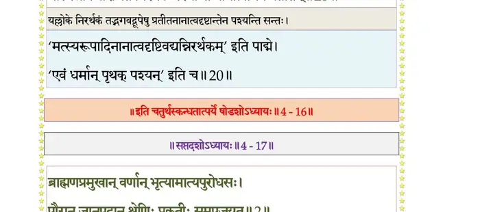

स्कन्ध 4 · अध्याय 16
श्लोक १
मैत्रेय उवाच–
इति ब्रुवाणं नृपतिं गायका मुनिचोदिताः ।
तुष्टुवुस्तुष्टमनसस्तद्वागमृतसेवया।। १ ।।
इति ब्रुवाणं नृपतिं गायका मुनिचोदिताः ।
तुष्टुवुस्तुष्टमनसस्तद्वागमृतसेवया।। १ ।।
श्लोक २
सूत उवाच–
नालं वयं ते महिमानुवर्णने यो देवदेवोऽवततार मायया ।
वेनाङ्गजातस्य च पौरुषाणि ते वाचस्पतीनामपि बभ्रमुर्धियः।। २ ।।
नालं वयं ते महिमानुवर्णने यो देवदेवोऽवततार मायया ।
वेनाङ्गजातस्य च पौरुषाणि ते वाचस्पतीनामपि बभ्रमुर्धियः।। २ ।।
श्लोक ४
अथाप्युदारश्रवसः पृथोर्हरेः कलावतारस्य कथामृतादृताः ।
यथोपदेशं मुनिभिः प्रचोदिताः श्लाघ्यानि कर्माणि वयं वितन्महे ।।
एष धर्मभृतां श्रेष्ठो लोकं धर्मेऽनुवर्तयन् ।
गोप्ता च धर्मसेतूनां शास्ता तत्परिपन्थिनाम्।। ४ ।।
यथोपदेशं मुनिभिः प्रचोदिताः श्लाघ्यानि कर्माणि वयं वितन्महे ।।
एष धर्मभृतां श्रेष्ठो लोकं धर्मेऽनुवर्तयन् ।
गोप्ता च धर्मसेतूनां शास्ता तत्परिपन्थिनाम्।। ४ ।।
श्लोक ५
एष वै लोकपालानां बिभर्त्येकस्तनौ तनूः ।
काले काले यथाभागं लोकयोरुभयोर्हितम्।। ५ ।।
काले काले यथाभागं लोकयोरुभयोर्हितम्।। ५ ।।
श्लोक ६
वसु काल उपादत्ते काले चायं विमुञ्चति ।
समः सर्वेषु भूतेषु प्रतपन् सूर्यवद् विभुः।। ६ ।।
समः सर्वेषु भूतेषु प्रतपन् सूर्यवद् विभुः।। ६ ।।
श्लोक ७
तितिक्षत्यक्रमं वैन्य उपर्याक्रमतामपि ।
भूतानां करुणः शश्वदार्तानां क्षितिवृत्तिमान्।। ७ ।।
भूतानां करुणः शश्वदार्तानां क्षितिवृत्तिमान्।। ७ ।।
श्लोक ८
देवेऽवर्षत्यसौ देवो नरदेववपुर्हरिः ।
कृच्छ्रप्राणाः प्रजा ह्येष रक्षिष्यत्यञ्जसेन्द्रवत्।। ८ ।।
कृच्छ्रप्राणाः प्रजा ह्येष रक्षिष्यत्यञ्जसेन्द्रवत्।। ८ ।।
श्लोक ९
आप्याययत्यसौ लोकं वदनामृतमूर्तिना ।
सानुरागावलोकेन विशदस्मितचारुणा।। ९ ।।
सानुरागावलोकेन विशदस्मितचारुणा।। ९ ।।
श्लोक १०
अव्यक्तवर्त्मैष विशुद्धकार्यो गम्भीरचेता उपगुप्तवित्तः ।
अनन्तमाहात्म्यगुणैकधामा पृथुः प्रचेता इव संवृतात्मा।। १० ।।
अनन्तमाहात्म्यगुणैकधामा पृथुः प्रचेता इव संवृतात्मा।। १० ।।
श्लोक ११
दुरासदो दुर्विषह आसन्नोऽपि विदूरवत् ।
नैवाभिभवितुं शक्यो वेनारण्युत्थितोऽनलः।। ११ ।।
नैवाभिभवितुं शक्यो वेनारण्युत्थितोऽनलः।। ११ ।।
श्लोक १२
अन्तर्बहिश्च भूतानां पश्यन् कर्माणि चारणैः ।
उदासीन इवाध्यक्षो वायुरात्मेव देहिनाम्।। १२ ।।
उदासीन इवाध्यक्षो वायुरात्मेव देहिनाम्।। १२ ।।
श्लोक १३
नादण्ड््यं दण्डयत्येष सुतमात्मद्विषामपि ।
दण्डयत्यात्मजमपि दण्ड््यं धर्मपथे स्थितः।। १३ ।।
दण्डयत्यात्मजमपि दण्ड््यं धर्मपथे स्थितः।। १३ ।।
श्लोक १४
अस्याप्रतिहतं चक्रं पृथोरामानसाचलात् ।
वर्तते भगवानर्को यावत् तपति गोगणैः।। १४ ।।
वर्तते भगवानर्को यावत् तपति गोगणैः।। १४ ।।
श्लोक १५
रञ्जयिष्यति यल्लोकमयमात्मविचेष्टितैः ।
अथामुमाहू राजानं मनोरञ्जनकैः प्रजाः।। १५ ।।
अथामुमाहू राजानं मनोरञ्जनकैः प्रजाः।। १५ ।।
श्लोक १६
दृढव्रतः सत्यसन्धो ब्रह्मण्यो वृद्धसेवकः ।
शरण्यः सर्वभूतानां मानदो दीनवत्सलः।। १६ ।।
शरण्यः सर्वभूतानां मानदो दीनवत्सलः।। १६ ।।
श्लोक १७
मातृभक्तिः परस्त्रीषु पत्न्यामर्ध इवात्मनः ।
प्रजासु पितृवत् स्निग्धः किङ्करो ब्रह्मवादिनाम्।। १७ ।।
प्रजासु पितृवत् स्निग्धः किङ्करो ब्रह्मवादिनाम्।। १७ ।।
श्लोक १८
देहिनामात्मवत् प्रेष्ठः सुहृदानन्दवर्धनः ।
मुक्तसङ्गप्रसङ्गोऽयं दण्डपाणिरसाधुषु।। १८ ।।
मुक्तसङ्गप्रसङ्गोऽयं दण्डपाणिरसाधुषु।। १८ ।।
श्लोक १९
एष दोग्धा महीं वीरो गां सतीमोजसौषधीः ।
समां करिष्यते चेमां धनुः कोट्या समन्ततः।। १९ ।।
समां करिष्यते चेमां धनुः कोट्या समन्ततः।। १९ ।।
श्लोक २०
अयं तु साक्षाद्भगवांस्त्र्यधीशः कूटस्थ आत्मा कलयाऽवतीर्णः ।
यस्मिन्नविद्यारचितं निरर्थकं पश्यन्ति नानात्वमिव प्रतीतम्।। २० ।।
यस्मिन्नविद्यारचितं निरर्थकं पश्यन्ति नानात्वमिव प्रतीतम्।। २० ।।
भागवततात्पर्यनिर्णय

श्लोक २१
अयं भुवो मण्डलमोदयाद्रेर्गौप्तैकवीरो नरदेवनाथः ।
आस्थाय जैत्रं रथमात्तचापः पर्यस्यते दक्षिणतो यथाऽर्कः।। २१ ।।
आस्थाय जैत्रं रथमात्तचापः पर्यस्यते दक्षिणतो यथाऽर्कः।। २१ ।।
श्लोक २२
तस्मै नृपालाः किल तत्र तत्र बलिं हरिष्यन्ति सलोकपालाः ।
मंस्यन्ति एषां स्त्रिय आदिराजं चक्रायुधं तद्यश उच्चरन्त्यः।। २२ ।।
मंस्यन्ति एषां स्त्रिय आदिराजं चक्रायुधं तद्यश उच्चरन्त्यः।। २२ ।।
श्लोक २४
अयं महीं गां दुदुहेऽधिराजः प्रजापतिर्वृत्तिकरः प्रजानाम् ।
यो लीलयाऽद्रीन् स्वशरासकोट्या भिन्दन् समां गामकरोद् यथेन्द्रः ।।
विस्फूर्जयन्नाजगवं धनुः स्वं यदाऽचरत् क्ष्मामविषह्य आजौ ।
तदा निलिल्युर्दिशि दिश्यसन्तो लाङ्गूलमुद्यम्य यथा मृगेन्द्रः।।२४।।
यो लीलयाऽद्रीन् स्वशरासकोट्या भिन्दन् समां गामकरोद् यथेन्द्रः ।।
विस्फूर्जयन्नाजगवं धनुः स्वं यदाऽचरत् क्ष्मामविषह्य आजौ ।
तदा निलिल्युर्दिशि दिश्यसन्तो लाङ्गूलमुद्यम्य यथा मृगेन्द्रः।।२४।।
श्लोक २५
एषोऽश्वमेधाञ्छतमाजहार सरस्वती प्रादुरभूद्धि यत्र ।
अहार्षीद् यस्य हयं पुरन्दरः शतक्रतुश्चरमे वर्तमाने।। २५ ।।
अहार्षीद् यस्य हयं पुरन्दरः शतक्रतुश्चरमे वर्तमाने।। २५ ।।
श्लोक २६
एष स्वसद्मोपवने समेत्य सनत्कुमारं भगवन्तमेकम् ।
आराध्य भक्त्याऽलभतामलं तत् ज्ञानं यतो ब्रह्म परं वदन्ति।।२६।।
आराध्य भक्त्याऽलभतामलं तत् ज्ञानं यतो ब्रह्म परं वदन्ति।।२६।।
श्लोक २७
तत्र तत्र गिरस्तास्ता इति विश्रुतविक्रमः ।
श्रोष्यत्यात्माश्रिता गाथाः पृथुः पृथुपराक्रमः।। २७ ।।
श्रोष्यत्यात्माश्रिता गाथाः पृथुः पृथुपराक्रमः।। २७ ।।
श्लोक २८
दिशो विजित्याप्रतिरुद्धचक्रः स्वतेजसोत्पाटितलोकशल्यः ।
एवं सुरेन्द्रैरनुगीयमानो महानुभावो भविता पतिर्भुवः।। २८ ।।
एवं सुरेन्द्रैरनुगीयमानो महानुभावो भविता पतिर्भुवः।। २८ ।।
।। इति श्रीमद्भागवते चतुर्थस्कन्धे षोडशोऽध्यायः ।।